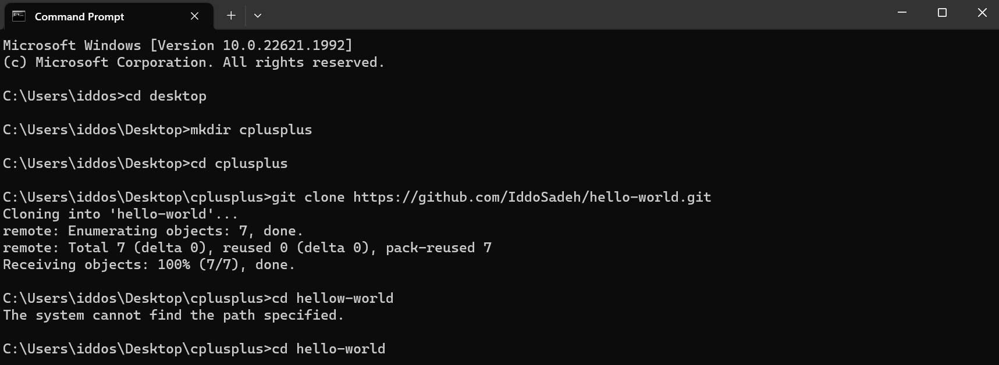
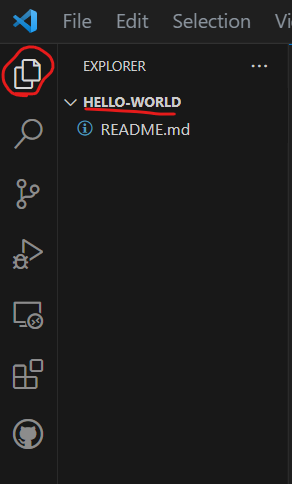
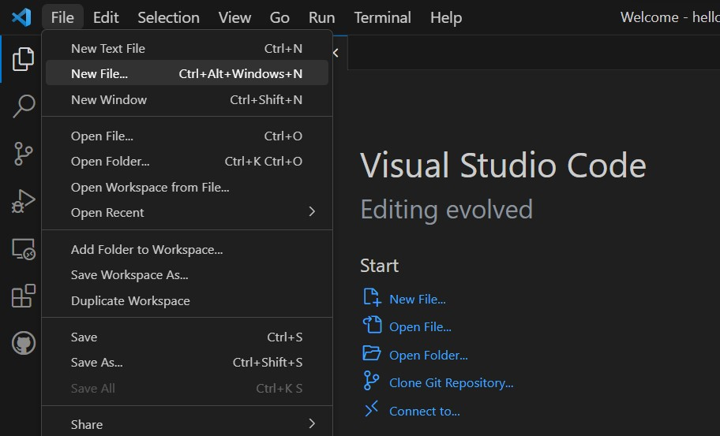
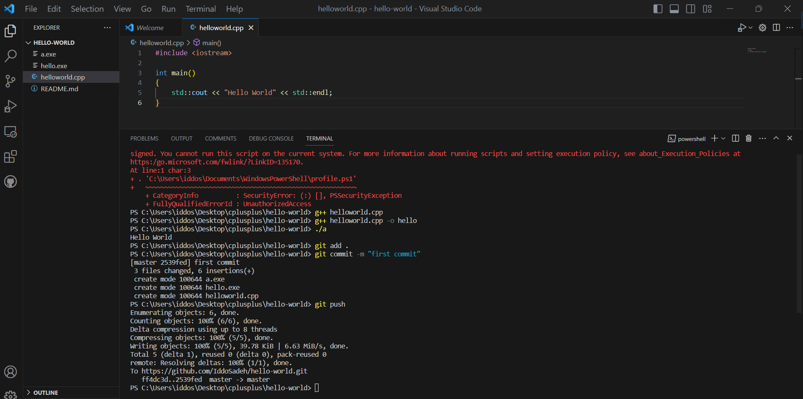

1. Introduction#
This Chapter will introduce you to C++ and go over the requirments for setting up your C++ environemnt. By the end of the chapter you will:
Have some background about C++.
Familiriaze yourself with the command line and version control systems.
Setup your C++ working environment.
Run your first C++ program.
1.1. Table of Contents#
Contents
1.2. Why learn C++?#
C++ is a fast language and it’s used everywhere, you can find C++ applications everywhere from the bottom of the oceans to the surface of Mars [Stroustrup, 2014]. Compared to other programming languages, you could say that C++ is a middle-level language. Programming languages tend to be on a spectrum: the higher the level of programming language, the more it resembles human language, and languages that are closer to being lower level resemble hardware instructions. Higher-level languages such as Python, Java, and C# are very easy to write with and to understand, but they tend to be slower. C++ takes a little more effort to write but it’s very fast. It has the benefit of working closely with machine hardware while still somewhat resembling human language.
1.3. Tools#
We will need several tools to assist us in our learning journey. Firstly, to get started with C++, there are two things you’ll need: A text editor and a compiler. In this textbook, I’m going to show you how to download VS Code, but feel free to use any text editor that you’re comfortable with.
The compiler, which is a piece of software that will parse source code to machine instructions, will vary based on your operating systme. If you’re using Windows or Linux, you’ll probably want to go with GCC. If you’re running Mac, you’ll probably go with Clang.
Two more common tools that are often neglected in introductory programming courses are version control softwares and the use of a command-line interface (CLI). I will aim to teach you how to integrate and use GitHub, a version control softare, as well as a CLI during our learning journey.
1.3.1. Text Editor#
Let’s download VS Code, the text editor I mentioned earlier. Navigate to this URL: https://code.visualstudio.com Then select the correct download for your operating system. After downloading, go through the installation process, creating a desktop icon if you like.
Once you’ve got your VS code running, install the C/C++ extension. You can find instructions how to do so by navigating to the following URL: https://code.visualstudio.com/docs/languages/cpp
1.3.2. Compiler#
After that, you will need to download the compiler that parses source code to machine instructions. Installation instructions vary depending on your operating system. Folllow the instructions from the previous URL to install the right compiler for your system.
1.3.3. Version Control#
Version Control systems can get pretty complicated. We’ll keep it simple for now.
The second step is to create your first repository. Head on over to https://docs.github.com/en/get-started/quickstart/hello-world#creating-a-repository and follow the instructions on how to create your first repository (Note: we’re keeping it simple, dont worry about the other parts of that webpage).
Next, we will set up Git by following the instructions at: https://docs.github.com/en/get-started/quickstart/set-up-git
1.3.4. Command-line interface#
There’s actually not much to do here. Your computer will already have a CLI. In your computers program directery, just search for one of the following:
Windows: Command Prompt
Linux: Linux Bash Shell
MacOs: Mac Terminal
1.4. Hello World#
Now that were all set-up, lets write our first program. These are the steps we’ll cover:
Open up your CLI
Use your CLI to navigate to a folder where you’d like to create your first program.
Clone the GitHub Repo we made earlier.
Write your Hello World Program.
Build your program.
Run your program.
Add changes to GitHub.
Easy right? Lets do this step by step.
1.4.1. Open your CLI#
Windows
Go to the start menu or press the Windows key on your keyboard.
Type “cmd” in the search field.
Click the Command Prompt.
Mac
Click the Launchpad icon in the Dock.
Type “Terminal” in the search field.
Click Terminal.
{kind=link}
{kind=link}
{kind=link}
1.4.3. Clone GitHub repository#
In layman’s terms, cloning a repositroy means downloading a coding project on to our computer.
To do this we will first go to the repository we made in the version control section. Usually the URL for that repo will be of the form github.com/YourUserName/hello-world. Once you access the repo you are going to look for a green button with the word “code”, click on it and copy the url under the section labeled HTTPS. You should see something like the image below, press on the button circled in red:
{kind=link}
Now, go back to your command prompt and navigate to the folder you would like to “download” the hello-world project to, then type git clone urlFromPreviousStep as follows:
{kind=link}
1.4.4. Write your hello world program#
(Tip: If my instructions don’t make sense for this part, follow this sectio on the VS code docs: https://code.visualstudio.com/docs/languages/cpp#_hello-world)
Now, we are ready to code! Navigate to the newly cloned folder:
{kind=link}
And open up your VS code with the code . command:
{kind=link}
Your VS code should have opened. You should know you are working on the correct project by looking to the left of your screen. Press the Explorer icon (circled in red below) and you should see the name of your hello world project and the README file you created earlier:
{kind=link}
Now press File on the top left of the VS code toolbar. A dropdown menu will appear, press new file:
{kind=link}
A dropdown menu will appear prompting you to select a file type, instead type in helloworld.cpp:
{kind=link}
You are now ready to write some code! in the helloworld.cpp file paste in the following code:
#include <iostream>
int main()
{
std::cout << "Hello World" << std::endl;
}
1.4.5. Build your program#
Note for this section, if you are using mac, replace g++ with clang++.
Building you program is easy:
Press the Terminal option in the dropdown menu of your VS code.
Press “New Terminal”.
A CLI will open up in the bottom of VS code. Notice that you are already in the correct file directory.
Type in
g++ helloworld.cpp.You will now see a file called
a.exein your working directory.If you want your executable file to have a different name you can type
g++ helloworld.cpp -o hello.
1.4.6. Run your program#
This is even easier!
In the Terminal from the previous step type ./a if you want to run a.exe or ./hello if you want to run hello.exe. You should see the words “Hello World” printed in the terminal.
1.4.7. Add changes to GitHub#
Almost done! Now in your terminal do the following:
Type
git add .- This will get all your changes ready to add to GitHub, Note the.means “all”Type
git commit -m "first commit- This will send the latest changes to your repository.Type
git push- This will make your changes available on GitHub!
Your terminal after the last three steps should look something like this:
{kind=link}
Last but not least, lets make sure everything worked. Go back to the repository you made in the version control section. Remember, usually the URL for that repo will be of the form github.com/YourUserName/hello-world. Once your there you should see your new files uploaded. Notice the words “first commit” appear beside the new file we made. this is the message we put after the -m in our commit. We always have to put a message when we commit, this is so we can give some information about the changes we made when we pushed new code and will be helpful when we look back at our code in the future.
1.5. Closing Thoughts#
You are now ready to learn some C++! You may already have a lot of questions, but don’t worry, it’ll all make sense as we move along. This is going to be a common them in this textbook. If you have questions, are confused or see a piece of code you don’t understand, stay calm! You can always search your way through the internet to answer the burning questions, but typically I will answer your questions in later chapters when you have the necessary context to understand the answers.
1.6. Bibliography#
- syn21
Oxford learners dictionary. 2021. URL: https://www.oxfordlearnersdictionaries.com/definition/english/syntax.
- Str14
Bjarne Stroustrup. Programming : principles and practice using C++. Addison-Wesley, 2 edition, 2014.